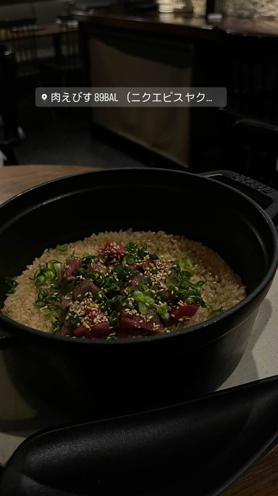

肉えびす89BAL（ニクエビスヤクバル）（旧店名：和肉89BAL）
肉師が全国から選ぶ黒毛和牛、ステーキから煮込みまで多彩に
肉えびす 89BAL（ニクエビスヤク…
「肉なしでは笑えない」を掲げる恵比寿の肉バル。肉師・山瀬憲作氏が全国から厳選した黒毛和牛や極上の赤身肉を、ステーキから煮込み、蒸し料理まで幅広い調理法で提供する。
TRIVIA
へえ、という話
- 店のコンセプトは「肉なしでは笑えない」
- 旧店名は「和肉89BAL」で、現在は「肉えびす89BAL」に改称している
REVIEWS
みんなの声
3.32食べログ
「厳選黒毛和牛の質とコスパ」に注目
- 厳選した黒毛和牛の質の高さや和牛のたたきじゅうたんなど個性的な料理を評価する声が多い
- 焼き加減の技術やコストパフォーマンスの良さを評価する声が目立つ
- ワンオペ営業で提供に時間がかかる点やサービス料がかかる点を指摘する声もある
食べログ 口コミ126件
| 系譜 | 旧店名は「和肉89BAL」 |
|---|---|
| 看板 | 黒毛和牛の「菊池牛」など全国から厳選した和牛・赤身肉を使ったステーキ・煮込み・蒸し料理 |
| こだわり | 肉師が全国から選んだ黒毛和牛と極上の赤身肉を、ステーキ・煮込み・蒸しなど多彩な調理法で提供する |
| 予算 | 夜 ¥6,000～¥7,999 |
| 場所 | 恵比寿駅 東京都渋谷区恵比寿4-27-3 |
| 注意 | 恵比寿駅東口から徒歩6分、路地裏の隠れ家的な空間 |
食べたもの：炊き込みご飯